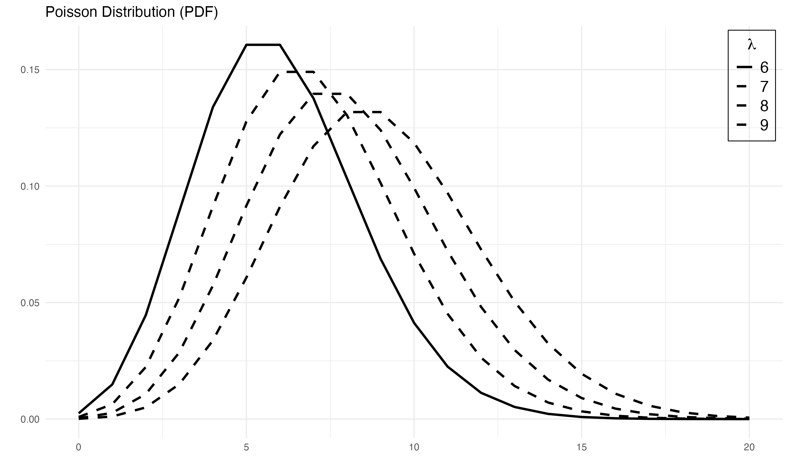

This package contains a simple wrapper function, pdplot2 which visualizes probability density/mass functions provided in the base R using ggplot2. The available probability density/mass functions include the following: normal, logistic, binomial, chi-square, poisson, exponential, cauchy, beta, gamma, geometric, Student's t and F.
Installation
install.packages(devtools)
devtools::install_github("tegedik/pdplot2")Usage
pdplot2 follows the convention of density distributions in R. First you need to create a vector of quantiles and pass it as the first argument in the function. Then, you need to select the correct parameter(s) for each distribution. Finally, you need to enter the type of the distribution. Here is an example with normal distribution,

This will create a normal probability distribution with mean 0 and sd 1. You can pass vector of parameter values as argument to plot multiple density curves.

Here is an example with binomial distribution,

Changing Linetypes
You might want to change the default linetypes. After setting line.selection=TRUE, you can pass a character vector to linetype to change them.
pdplot2(0:20, lambda=6:9, type="poisson", line.selection=TRUE,
linetype=c("solid", "dashed", "dashed", "dashed"))
Changing Colors
You might also prefer colored plots. To show colors instead of linetypes, you need to specify show.color=TRUE.

As in the case of linetypes, you can change colors. In addition to show.color=TRUE, you need to set color.selection=TRUE, and then pass a character vector to color.
pdplot2(seq(-5, 5, 0.01), mean=c(0,0,0), sd=c(1,1.5,2), type="normal",
show.color=TRUE, color.selection=TRUE, color=c("black", "blue", "green"))
References
Guangchuang Yu (2020). hexSticker: Create Hexagon Sticker in R. R package version 0.4.9. https://CRAN.R-project.org/package=hexSticker
H. Wickham. ggplot2: Elegant Graphics for Data Analysis. Springer-Verlag New York, 2016.
Karthik Ram and Hadley Wickham (2018). wesanderson: A Wes Anderson Palette Generator. R package version 0.3.6. https://CRAN.R-project.org/package=wesanderson